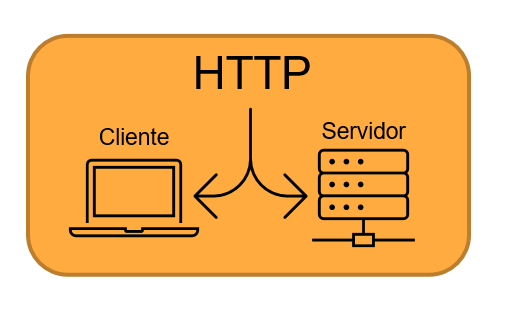
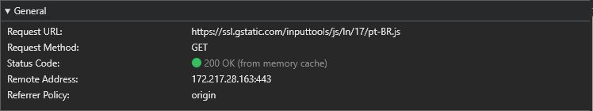
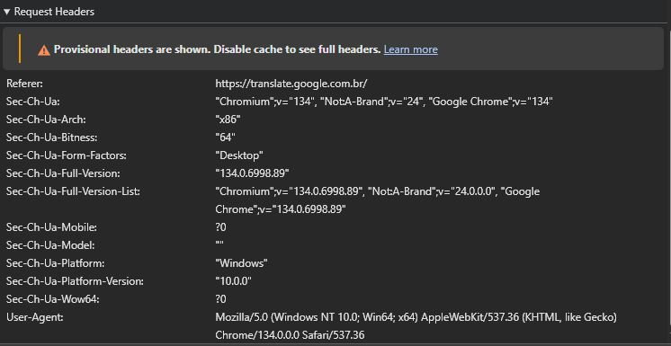
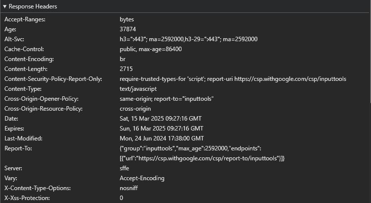

Protocolo HTTP e como é usado na WEB
O HTTP (Hypertext Transfer Protocol) é um protocolo de comunicação usado para a transferência de dados na Web. Ele define como um cliente (como um navegador) e um servidor se comunicam para trocar informações, como páginas HTML, imagens, vídeos e outros recursos da internet.

É um protocolo sem estado, o que significa que cada requisição feita pelo cliente é independente das anteriores, ou seja, o servidor não "lembra" das requisições anteriores por padrão. Para manter sessões de usuário, tecnologias como cookies e tokens são utilizadas.
Quando você digita um endereço no navegador (exemplo: www.googletradutor.com), o navegador envia uma requisição HTTP ao servidor desse site. O servidor recebe a requisição, processa a solicitação e responde com os dados necessários, como uma página HTML. O navegador recebe a resposta HTTP, interpreta o código e exibe o conteúdo ao usuário.
Exemplo de uma requisição HTTP
Quando acessamos um site, o navegador envia uma requisição como esta:
GET /index.html HTTP/1.1
Host: www.exemplo.com
User-Agent: Mozilla/5.0
Accept: text/html
- GET → Método da requisição (pode ser GET, POST, PUT, DELETE, etc.).
- GET → Obtém um recurso do servidor (exemplo: acessar uma página).
- POST → Envia dados para o servidor (exemplo: formulário de login).
- PUT → Atualiza um recurso existente no servidor.
- DELETE → Remove um recurso do servidor.
- /index.html → O recurso que está sendo solicitado.
- HTTP/1.1 → A versão do protocolo HTTP.
- Host → O domínio do servidor.
- User-Agent → Informa detalhes do navegador e sistema operacional.
- Accept → Diz ao servidor quais tipos de resposta o cliente aceita (exemplo: HTML, JSON).
Com o exemplo acima, podemos analisar alguns pontos importantes. Agora vamos analisar as informações do site do GOOGLE TRADUTOR do arquivo pt-BR.js.
Cabeçalho Geral

- Request URL: É o endereço completo do recurso solicitado. Ele indica que o navegador fez um pedido para obter um arquivo JavaScript (pt-BR.js) do servidor ssl.gstatic.com.
- Request Method:O método HTTP utilizado na requisição.
- Status Code: Indica o código de status da resposta do servidor. Neste caso "200" significa que a requisição foi bem-sucedida e o recurso foi retornado corretamente.
- Remote Address: O endereço IP (172.217.28.163) do servidor que respondeu à requisição. O número 443 indica que a conexão foi feita na porta 443, usada para HTTPS (conexões seguras).
- Referrer Policy: Define quais informações do site de origem podem ser enviadas junto com a requisição.
Request

- Referer: Esse campo informa ao servidor de onde veio a requisição. No caso, o usuário estava no site do Google Tradutor quando a requisição foi feita.
- Sec-ch-ua (User-Agent Client Hints): fornece informações sobre o navegador e o dispositivo do usuário de forma mais controlada do que o User-Agent.
- Sec-ch-ua-arch: Informa a arquitetura do processador do dispositivo.
- Sec-ch-ua-bitness: Indica que o sistema operacional é de 64 bits.
- Sec-ch-ua-form-factors: Indica o tipo de dispositivo usado. No caso, um computador desktop.
- User-Agent: É uma string antiga que identifica o navegador e sistema operacional do usuário. Está sendo substituído pelos Client Hints (sec-ch-ua) para melhorar privacidade e reduzir o rastreamento de usuários.
Response

- Accept-ranges: Indica que o servidor suporta requisições parciais, ou seja, permite baixar apenas uma parte do arquivo em vez de todo o conteúdo de uma vez. Isso é útil para downloads pausáveis e streaming.
- Age:Mostra há quanto tempo o conteúdo está armazenado em cache no servidor ou em um proxy intermediário antes de ser enviado para o navegador.
- Content-security-policy-report-only: Define regras de segurança para evitar ataques XSS (Cross-Site Scripting)
- Content-type: Indica que o conteúdo da resposta é um arquivo JavaScript.
- Server; Indica o tipo de servidor que respondeu à requisição. No caso (sffe), é um dos servidores do Google.
- Vary: Indica que a resposta pode mudar dependendo do valor do cabeçalho Accept-Encoding.